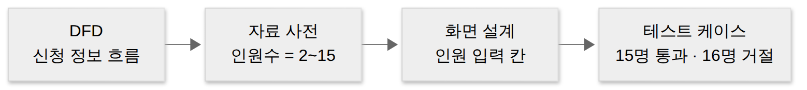
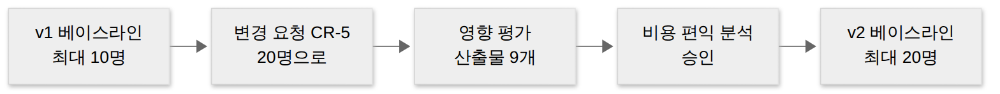

R05 · 분석 모델 확인 — 그림으로 굳히고, 도구로 잇고, 요구사항을 장부로 관리하기
1과목 리뉴얼A1 리뉴얼 다섯째 장은 책 1.2 분석 모델 확인이에요. 1장 ‘요구사항 확인’의 마지막 절이에요. R01에서는 요구를 모으는 기법을, R02·R03에서는 그 요구를 UML 그림으로 그리는 법을, R04에서는 짧게 반복하며 요구 변화를 받아들이는 애자일을 봤어요. 오늘은 그렇게 모으고 그린 결과를 모델로 굳히고, 그 모델을 도구(CASE)가 서로 잇고 검사하게 하고, 요구사항 자체를 요구사항 관리 도구라는 장부에 올려 변경을 추적하는 이야기예요. 책 분량은 네 쪽 남짓이지만, CASE 하나만 20회 시험 중 18회에 걸쳐 나왔을 만큼 시험에서는 단골이에요.
- 모델과 모델링의 정의를 말하고, 모델링의 특징(공통 개념 공유·문제 이해·결과물이 다른 모델링에 영향·분석부터 유지보수까지 전 단계 활용)과 틀린 설명(“유지보수 단계에서만 쓴다”, “다른 모델링에 영향을 주지 않는다”, AVL 다이어그램은 모델링 다이어그램)을 구별할 수 있다
- 분석 자동화 도구(CASE)의 정의와 등장 배경(산업 측면·관리 측면)을 말하고, CASE의 특징·장점과 장점이 아닌 것(재사용성 감소·사용자 교육용·2000년대 이후 객체지향 한정)을 가려낼 수 있다
- CASE의 원천 기술 다섯 가지(구조적 기법·프로토타이핑·자동 프로그래밍·정보 저장소·분산 처리)를 말하고 원천 기술이 아닌 것(일괄 처리)을 고를 수 있다
- 상위·하위·통합 CASE를 지원 단계와 기능으로 구별하고, CASE 주요 기능 다섯 가지와 아닌 것(언어 번역)을 고를 수 있다
- 요구사항 관리 도구의 정의·필요성(비용 편익 분석·변경 추적·영향 평가)·기능(기본·핵심·부가)을 설명하고, 형상 관리 도구(SVN·Git)와 쓰임을 구별할 수 있다
⓪ 큰 그림 — ‘단체 대여’ 요구가 세 군데서 발견된 날
R04에서 애자일로 첫 6주를 굴린 씽씽 2.0 팀이 스프린트 3에 들어섰어요. 이번 스프린트의 핵심은 회사·동아리용 단체 대여예요. 그런데 개발을 시작하려고 보니 요구사항이 세 군데에 서로 다른 모습으로 남아 있었어요. 회의실 화이트보드를 찍은 사진에는 “단체 최대 10명”, 운영팀 카톡방에는 “대표자 한 명이 결제하고 나머지는 QR로 탑승”, 기획자의 엑셀 시트에는 “최대 15명, 인원별 각자 결제”가 적혀 있었죠. 개발자 셋이 각자 다른 버전을 보고 만들기 시작했다면 결과는 뻔해요. 요구사항이 세 군데 있으면 사실상 요구사항은 0개예요. 어느 게 진짜인지 아무도 모르니까요.
팀은 세 단계로 정리하기로 해요. 먼저 흩어진 말과 메모를 하나의 모델(DFD·UML 같은 그림)로 굳혀 “우리가 말하는 단체 대여는 이것”이라고 못 박아요. 다음으로 그 그림을 종이가 아니라 CASE 도구에 올려서, 그림끼리 모순이 없는지 기계가 검사하게 하고 코드 뼈대와 문서까지 뽑아요. 마지막으로 요구 하나하나에 번호를 붙여 요구사항 관리 도구에 올리고, 언제 누가 왜 바꿨는지와 바꾸면 어디가 흔들리는지를 장부처럼 남겨요. 책 1.2절의 세 덩어리(모델링 기법 → 분석 자동화 도구 → 요구사항 관리 도구)가 바로 이 순서예요.
① 모델과 모델링
모델이란
모델(Model)은 어떤 대상(객체·시스템·개념)의 구조와 동작을 보여 주는 단순화된 표현이에요. 실제 대상은 너무 복잡해서 한눈에 이해할 수 없으니, 지금 목적에 필요한 부분만 남기고 나머지는 버린 뒤(추상화) 기호와 그림으로 보이게 만들어요(시각화). 그래서 모델은 세 가지 일을 해요. 지금 문제 상황이 어떤지 이해하게 돕고, 해결책을 남에게 설명하는 도구가 되고, 아직 만들지 않은 시스템이 어떤 모습일지 미리 짐작하게 해 줘요.
지하철 노선도를 떠올리면 쉬워요. 노선도는 실제 거리도, 선로의 곡선도, 역 주변 건물도 다 버리고 “어느 역에서 갈아타나”만 남긴 그림이에요. 정확한 지도는 아니지만, 갈아탈 역을 찾는 목적에는 실제 지도보다 훨씬 쓸모 있죠. 소프트웨어 모델도 같아요. 씽씽 2.0의 실제 세계에는 회원의 옷차림, 킥보드 색깔, 카드사 내부 전산망, 골목길 지도까지 다 있지만, 단체 대여 기능을 설계하는 데 필요한 건 “회원이 대여를 하고, 대여는 킥보드를 대상으로 한다” 같은 뼈대뿐이에요.
이렇게 엔터티(실체)와 그 사이의 관계·종속성만으로 업무 개념을 그린 것을 개념 모델이라고 해요. 씽씽에서는 ‘회원’·‘대여’·‘킥보드’ 세 엔터티와 “회원이 대여한다”, “대여는 킥보드 한 대를 쓴다”는 관계가 개념 모델이에요. 개념 모델은 나중에 데이터베이스 설계(3과목)의 E-R 모델로 이어져요.
모델링이란, 그리고 네 가지 특징
모델링(Modeling)은 실세계의 현상을 목적에 맞게, 쓰기 쉬운 형식으로 표현하는 작업과 기법이에요. 모델이 결과물(그림)이라면 모델링은 그 그림을 만드는 과정이죠. 시험은 모델링의 특징을 네 가지로 묶어서 물어요.
첫째, 모델은 개발자·분석가·고객이 같은 개념을 공유하게 해 줘요. 씽씽 팀의 세 버전 문제도 결국 말과 메모로만 주고받아서 생긴 일이에요. 그림 한 장 앞에서는 “최대 10명이냐 15명이냐”가 바로 드러나요. 둘째, 모델링은 응용 문제를 이해하는 데 도움이 돼요. 그리다 보면 “대표자가 결제를 취소하면 나머지 9명의 대여는 어떻게 되지?”처럼 말로는 보이지 않던 빈칸이 보여요. 셋째, 한 번 그린 그림은 그다음에 그릴 그림의 재료가 돼요. 앞 모델을 바꾸면 뒤 모델도 따라 바뀌어야 하죠. DFD에서 정한 자료 흐름이 자료 사전의 항목이 되고, 자료 사전 항목이 화면 설계의 입력 칸이 되고, 그 화면이 테스트 케이스의 기준이 돼요(그림 4). 넷째, 모델링은 분석 단계뿐 아니라 설계·구현·테스트·유지보수까지 개발 전 단계에서 쓰여요. 유지보수 담당자가 새로 들어왔을 때 코드보다 먼저 펼쳐 보는 것도 모델이에요.
표기법은 개발 방법론에 따라 갈려요. 구조적 분석은 처리(프로세스) 중심이라 DFD(자료 흐름도)로 데이터가 어디서 어디로 흐르며 바뀌는지를 그리고, 그 흐름에 나오는 데이터의 뜻을 DD(자료 사전)에 적어요. 객체 지향 분석은 데이터와 기능을 묶은 객체 중심이라 UML(유스케이스·클래스·시퀀스 다이어그램 등)을 써요. 어느 쪽이든 핵심은 같아요. 실세계를 제대로 모델링하는 것이 요구 분석의 중심이에요. DFD와 자료 사전의 자세한 기호는 R01, UML은 R02·R03에서 봤으니 여기서는 같은 ‘단체 대여’를 두 언어로 그린 모습만 비교해 볼게요.
세 번째 특징 “결과물이 다른 모델링에 영향을 준다”는 아래처럼 사슬로 보면 확실해져요. 씽씽 팀이 단체 상한을 15명으로 정해 DFD의 ‘신청 정보’를 고치면, 자료 사전의 ‘인원수’ 정의(2~15)가 바뀌고, 신청 화면의 인원 입력 칸이 바뀌고, 경계값 테스트(15명은 통과, 16명은 거절)가 바뀌어요. 한 그림만 고치고 나머지를 안 고치면 그 차이가 그대로 버그가 돼요. 이 사슬을 사람 대신 기계가 따라가며 확인해 주는 것이 다음 절의 CASE예요.

모델링 다이어그램인가, 아닌가
시험에는 “다음 중 모델링에 쓰는 다이어그램이 아닌 것은?”처럼 이름만 늘어놓고 고르게 하는 문제도 나와요. 기준은 하나예요. 소프트웨어의 요구·구조·동작을 표현하는 그림인가? DFD·자료 사전·E-R 다이어그램·UML(유스케이스·클래스·시퀀스·상태 등)은 모두 그래요. 반면 이름이 비슷하게 생긴 다른 분야의 그림이 함정으로 섞여 나와요. 아래 표에서 판정 칸을 가리고 먼저 답해 보세요.
| 이름 | 모델링 다이어그램? | 이유 |
|---|---|---|
| E-R 다이어그램 | 예 | 엔터티와 관계로 데이터 구조를 표현(개념 모델) |
| 시퀀스 다이어그램 | 예 | 객체 사이 메시지 순서를 표현(UML 행위, R03) |
| AVL Diagram | 아니요 | AVL은 높이 균형을 맞추는 이진 탐색 트리(자료구조)의 이름이에요 |
| 유스케이스 다이어그램 | 예 | 사용자 관점의 기능 요구를 표현(UML, R03) |
| Phase Diagram | 아니요 | 물질의 상태(고체·액체·기체)를 온도·압력으로 그린 상평형 그림이에요 |
| DFD | 예 | 처리와 자료 흐름을 표현(구조적 분석, R01) |
정리하면 모델은 지도이고 모델링은 지도를 그리는 일이에요. 그런데 지도를 손으로 여러 장 그리면 장마다 조금씩 어긋나기 마련이에요. 씽씽 팀의 DFD에는 15명, 자료 사전에는 아직 10명이 남아 있는 식이죠. 이걸 사람이 눈으로 맞춰 보는 대신 도구에 맡기자는 생각에서 나온 것이 CASE예요.
② 분석 자동화 도구(CASE)란, 왜 생겼나 기출 18회
정의
분석 자동화 도구는 요구사항을 분석하고 명세서를 쓰는 일을 자동으로 도와주는 도구예요. 이런 도구를 통틀어 CASE(Computer-Aided Software Engineering, 컴퓨터 지원 소프트웨어 공학)라고 불러요. 기계 설계를 컴퓨터로 돕는 CAD에서 따온 이름이에요. CASE는 요구 분석 한 단계만 돕는 데서 끝나지 않고, 소프트웨어 생명주기의 일부 또는 전체(계획·분석·설계·구현·테스트·유지보수)를 이어서 자동화하는 통합 도구로 쓰여요. 소프트웨어·하드웨어·데이터베이스·테스트를 한 환경에서 다루게 해 주는 개발 작업대라고 보면 돼요.
씽씽 팀 장면으로 보면 이래요. 화이트보드 사진 속 DFD를 CASE 도구에 옮겨 그리자마자 도구가 경고를 띄워요. “자료 흐름 ‘단체 결제 정보’가 자료 사전에 정의되어 있지 않습니다.” 사람 셋이 일주일 동안 못 찾은 빈칸을 도구가 저장하는 순간 찾아낸 거예요. 이어서 UML 클래스 다이어그램을 그리면 도구가 클래스 뼈대 코드를 만들어 주고, 그림을 바꾸면 명세 문서도 함께 갱신돼요. 지금 쓰는 모델링 툴, IDE의 코드 생성기, 테스트 자동화 도구가 모두 CASE의 후손이에요.
등장 배경 — 왜 자동화가 필요해졌나
CASE가 생긴 배경은 두 측면으로 나눠 기억해요. 산업 측면에서는 1960~70년대 이후 소프트웨어 규모가 커지면서 일정 지연·예산 초과·품질 저하가 반복되는 소프트웨어 위기가 왔어요. 사람 손에만 맡겨서는 늘어나는 수요를 감당할 수 없었죠. 관리 측면에서는 고객이 원한 것과 실제로 만들어진 것 사이의 차이가 컸고, 만들어 둔 것을 다시 쓰기 어렵고, 생산성은 오르지 않고, 유지보수 비용이 계속 불어났어요. 그래서 개발 과정 자체를 표준화하고 기계로 돕자는 흐름이 생긴 거예요.
| 측면 | 문제 | CASE에 기대한 것 |
|---|---|---|
| 산업 | 소프트웨어 위기(규모 증가 → 일정·비용·품질 붕괴) | 개발 과정을 자동화해 생산성 확보 |
| 관리 | 요구와 결과의 차이, 재사용 어려움, 낮은 생산성, 유지보수 부담 | 표준화·문서화·변경 추적으로 관리 가능하게 |
특징과 장점
CASE의 특징은 네 갈래로 정리돼요. 첫째 품질: 모두가 같은 표기법과 같은 양식으로 작업하니 산출물이 표준화되고, 문서가 자동으로 만들어져 문서화 품질이 고르게 돼요. 자동화 기법으로 사람이 놓치는 오류를 일찍 잡으니 결과물 품질도 올라가요. 둘째 변경 관리: 요구나 설계가 바뀌면 그 변경이 어느 산출물에 영향을 주는지 추적할 수 있어요. 셋째 유지보수: 설계와 모듈이 정리된 형태로 저장되니 재사용성이 높아지고, 유지보수가 쉬워지고 비용이 줄어요. 넷째 기술적 기반: CASE는 몇 가지 원천 기술 위에 서 있어요(다음 절).
이 장점들을 하나로 묶으면 “개발자가 생산성 높게, 품질 좋게, 다시 쓸 수 있게 만들도록 돕는다”예요. 여기서 중요한 건 CASE의 사용자는 개발자라는 점이에요. 출제자는 CASE를 자꾸 ‘최종 사용자가 프로그램 사용법을 빨리 익히게 하는 교육 도구’로 둔갑시키는데, CASE의 손님은 개발팀이지 씽씽 앱을 쓰는 회원이 아니에요. 또 CASE는 1980년대 구조적 기법 시절부터 쓰인 도구라 “2000년대 이후 객체 지향 방법론에만 쓰인다”는 설명도 틀려요.
아래 문장으로 맞는 말과 둔갑한 말을 가려 보세요. 판정 칸을 가리고 먼저 답해 보면 좋아요.
| 문장 | 판정 |
|---|---|
| CASE를 쓰면 모듈의 재사용성이 낮아진다 | 둔갑 — 재사용성은 높아져요 |
| CASE는 생명주기의 전 단계를 연결해 준다 | 맞음 |
| CASE는 2000년대 이후 객체 지향 방법론에만 쓰인다 | 둔갑 — 구조적 기법 시절부터 쓰였어요 |
| CASE는 표준화된 개발 환경과 문서 자동화를 제공한다 | 맞음 |
| CASE의 주요 기능에는 프로그래밍 언어 사이의 번역이 있다 | 둔갑 — 언어 번역은 컴파일러·번역기의 일이에요 |
| CASE는 그림(그래픽) 작성을 지원한다 | 맞음 |
CASE가 무엇이고 왜 쓰는지는 잡혔어요. 그럼 이 도구는 무슨 기술로 그런 일을 해내고, 생명주기의 어디를 맡는지 볼 차례예요.
③ CASE의 원천 기술 · 분류 · 주요 기능
원천 기술 다섯 가지
원천 기술은 CASE를 가능하게 만든 바탕 기술이에요. 다섯 개 이름만 외우면 일괄 처리 같은 함정에 걸리기 쉬우니, 각각 CASE가 무엇을 할 수 있게 해 주는지로 기억해요.
구조적 기법은 DFD·구조도처럼 정해진 규칙으로 시스템을 그리는 방법이에요. 규칙이 있으니 기계가 그림을 읽고 검사할 수 있어요. 프로토타이핑 기술은 화면 시안을 빨리 만들어 고객에게 보여 주는 기술이에요. CASE가 화면 설계를 지원하는 바탕이에요. 자동 프로그래밍 기술은 설계 정보로부터 코드를 자동으로 만들어 내는 기술이에요. 클래스 다이어그램에서 코드 뼈대가 나오는 게 이 덕분이에요. 정보 저장소 기술(Repository)은 모든 산출물 정보를 한 저장소에 모아 두는 기술이에요. DFD 도구·자료 사전 도구·코드 생성 도구가 같은 장부를 보니까 “자료 사전에 없는 흐름” 같은 모순을 찾을 수 있어요. CASE의 심장이라고 할 만해요. 분산 처리 기술은 여러 컴퓨터에 흩어진 개발자들이 같은 저장소에 동시에 접근해 함께 작업하게 해 주는 기술이에요.
반대로 일괄 처리 기술(Batch Processing)은 데이터를 모았다가 한꺼번에 처리하는 방식이에요. 씽씽의 밤 12시 정산 작업 같은 곳에 쓰이지, CASE를 받치는 기술 목록에는 없어요. 이름만 보면 ‘처리 기술’이라 그럴듯해서 단골 오답이 돼요.
상위 CASE · 하위 CASE · 통합 CASE
CASE는 생명주기의 어느 단계를 지원하느냐로 나눠요. 생명주기를 왼쪽(계획·분석·설계)과 오른쪽(구현·테스트)으로 쪼개 보면 쉬워요.
상위 CASE(Upper CASE)는 생명주기 앞부분, 즉 계획·요구 분석·설계 단계를 지원해요. 하는 일은 그림을 그리고 그 그림이 맞는지 따지는 거예요. 자료 흐름도 같은 다이어그램 작성을 돕고, 모델 사이의 모순을 검사하고, 오류를 검증하고, 산출물 사이의 일관성을 확인해요. 요구 분석 단계의 사용자 인터페이스(UI) 설계와 프로토타입 작성도 지원해요. 씽씽 팀이 도구에 DFD를 옮기자 “자료 사전에 없는 흐름”을 잡아낸 장면이 상위 CASE의 일이에요.
하위 CASE(Lower CASE)는 생명주기 뒷부분, 즉 구현·테스트 단계를 지원해요. 하는 일은 실제로 만드는 쪽이에요. 문법에 맞게 코드를 쓰도록 실시간으로 잡아 주는 구문 중심 편집기(오타나 괄호 짝을 바로 표시하는 편집기를 떠올리면 돼요), 코드를 실행하지 않고 검사하는 정적 테스트와 실행하며 검사하는 동적 테스트 지원, 그리고 시스템 명세서와 소스 코드 생성이 하위 CASE의 몫이에요.
통합 CASE(I-CASE, Integrated CASE)는 상위와 하위를 하나로 묶어 생명주기 전체를 지원해요. 앞에서 본 정보 저장소를 가운데 두고 분석 도구·설계 도구·코드 생성 도구·테스트 도구가 같은 정보를 함께 쓰는 형태예요. 상위 CASE는 설계사무소, 하위 CASE는 시공사, 통합 CASE는 둘을 한 회사로 합친 종합 건설사라고 보면 돼요. 설계사무소에 벽돌 쌓기(코드 생성)를 맡기거나 종합 건설사가 시공만 한다고 하면 틀린 선지가 돼요.
씽씽 팀의 ‘단체 대여’ 요구 하나가 CASE를 통과하는 과정을 단계별로 따라가 보면 세 분류가 어떻게 이어지는지 보여요.
| 단계 | 도구가 한 일 | 분류 |
|---|---|---|
| ① 그리고 검사 | DFD·자료 사전 작성 → “단체 결제 정보가 자료 사전에 없음” 경고, 신청 화면 시안 작성 | 상위 CASE |
그림을 그리는 순간 모순 검사가 돌아요. 사람이 회의로 찾던 빈칸을 도구가 먼저 찾아요.
| 단계 | 도구가 한 일 | 분류 |
|---|---|---|
| ① 그리고 검사 | DFD·자료 사전 정리, 모순 해결 | 상위 CASE |
| ② 만들어 내기 | 클래스 다이어그램 → GroupRental 코드 뼈대, API 명세서 자동 생성 | 하위 CASE |
설계 정보에서 코드와 명세서가 나와요. 자동 프로그래밍 기술이 쓰이는 지점이에요.
| 단계 | 도구가 한 일 | 분류 |
|---|---|---|
| ② | 코드 뼈대·명세서 생성 | 하위 CASE |
| ③ 검사하며 짜기 | 구문 중심 편집기가 문법 오류 즉시 표시, 정적 분석(실행 전) · 동적 테스트(실행) 수행 | 하위 CASE |
문법 실수는 쓰는 순간, 논리 실수는 테스트에서 잡아요.
| 단계 | 도구가 한 일 | 분류 |
|---|---|---|
| ①~③ | 분석 → 설계 → 구현 → 테스트 | 상위 + 하위 |
| ④ 한 장부에 기록 | 모든 산출물이 정보 저장소 하나에 연결 — DFD를 고치면 코드·문서·테스트 중 영향받는 곳이 표시됨 | 통합 CASE |
네 단계가 같은 저장소를 보니 끊김이 없어요. 이게 통합 CASE와 정보 저장소의 힘이에요.
아래 작업이 상위와 하위 중 어느 쪽 일인지 판정 칸을 가리고 먼저 골라 보세요.
| 작업 | 판정 |
|---|---|
| 요구 분석 결과의 오류 검증 | 상위 CASE |
| 구문 중심 편집 | 하위 CASE |
| 프로토타입 작성 지원 | 상위 CASE |
| 실행하며 확인하는 동적 테스트 | 하위 CASE |
| 산출물 사이의 일관성 확인 | 상위 CASE |
| 실행 없이 코드를 훑는 정적 분석 | 하위 CASE |
CASE의 주요 기능 다섯 가지
분류가 ‘어디를 맡나’라면 주요 기능은 ‘무엇을 해 주나’예요. 책과 기출이 꼽는 다섯 가지는 이래요. ① 그래픽 지원: DFD·UML 같은 그림을 도구 안에서 그리고 고칠 수 있게 해 줘요. ② 생명주기 전 단계의 연결: 분석에서 만든 정보가 설계·구현·테스트로 끊기지 않고 이어져요. ③ 다양한 소프트웨어 개발 모형 지원: 폭포수든 나선형이든 애자일이든 팀이 고른 방식에 맞춰 쓸 수 있어요. ④ 표준화된 개발 환경 구축과 문서 자동화: 모두가 같은 양식으로 작업하고, 문서가 그림에서 자동으로 나와요. ⑤ 작업자 간 커뮤니케이션 증대: 같은 저장소의 같은 그림을 보니 “최대 10명이냐 15명이냐” 같은 엇갈림이 줄어요.
주요 기능 문제의 오답 자리는 거의 늘 언어 번역이에요. C 코드를 자바로 바꾸는 건 번역기·컴파일러의 일이지 CASE의 기능 목록에 없어요. 원천 기술 문제의 일괄 처리와 같은 역할이라고 보면 돼요. 둘 다 ‘컴퓨터가 하는 그럴듯한 일’이라 섞여 들어와요.
| 질문 | 맞는 것 | 단골 오답 |
|---|---|---|
| 원천 기술은? | 구조적 기법 · 프로토타이핑 · 자동 프로그래밍 · 정보 저장소 · 분산 처리 | 일괄 처리 |
| 주요 기능은? | 그래픽 지원 · 전 단계 연결 · 다양한 개발 모형 지원 · 표준 환경과 문서 자동화 · 커뮤니케이션 증대 | 언어 번역 |
| 상위 CASE가 하는 일은? | 다이어그램 작성 · 모순 검사 · 오류 검증 · UI 설계 지원 | 소스 코드 생성(하위) |
| 통합 CASE는? | 생명주기 전체 지원, 정보 저장소 공유 | “구현·유지보수만 지원” |
책 밖에서 나오는 구조적 분석 도구 네 가지
책 1.2절에는 없지만 기출에 가끔 나오는 옛 CASE 도구 이름이 있어요. 1970~80년대 구조적 분석 시절의 대표 도구들이라 이름과 개발처, 특징의 짝만 알면 돼요. SADT는 SofTech(소프텍)사가 만든 구조적 분석·설계 기법으로, 활동 하나를 상자 하나로 그리는 블록 다이어그램이 특징이에요. SREM은 TRW사가 실시간 처리 시스템용으로 만든 도구로, 요구를 RSL이라는 언어로 쓰면 REVS가 자동으로 분석해요. PSL/PSA는 미시간 대학의 ISDOS 프로젝트에서 나온 도구로, PSL(문제 기술 언어)로 쓰고 PSA(문제 분석기)가 분석 보고서를 만들어요. TAGS는 시스템 공학 방법을 개발 주기 전 과정에 걸쳐 자동으로 지원하는 통합 도구예요. 자세한 SADT 상자 모양은 D005에 있어요.
CASE가 그림과 코드 사이를 잇는 도구라면, 남은 질문이 하나 있어요. 그림의 출발점인 요구사항 자체가 바뀔 때는 누가 기억하고 관리하죠? 씽씽 팀의 ‘10명 → 15명’ 같은 변경은 CASE 그림 안에서는 그냥 숫자 하나 바뀐 것처럼 보이거든요.
④ 요구사항 관리 도구
정의와 필요성
요구사항 관리 도구는 요구사항을 하나하나 등록하고, 그 요구사항을 바탕으로 프로젝트 관리·설계·개발·테스트가 이어지도록 지원하는 도구예요. 요구사항이 화이트보드 사진·카톡·엑셀에 흩어지는 대신 한 곳에 고유 번호를 달고 모여 있게 되죠. 요구사항 관리 도구는 가계부와 닮았어요. 돈이 언제, 왜, 얼마나 나갔는지 다 적혀 있어서 월말에 남 탓을 못 하는 것처럼, 요구가 언제 누구 요청으로 어떻게 바뀌었는지가 다 남아요.
이 도구가 필요한 이유는 세 가지로 정리돼요. 첫째 비용 편익 분석: 요구 변경을 받아들일 때 드는 비용과 얻는 이득을 따져서 할지 말지 결정할 근거를 줘요. 둘째 변경 추적: 요구가 누구 요청으로, 언제, 무엇에서 무엇으로 바뀌었는지 이력을 따라갈 수 있어요. 셋째 영향 평가: 요구 하나가 바뀌면 그 요구와 연결된 설계·코드·테스트 중 어디가 흔들리는지 찾아서 평가할 수 있어요. 씽씽에서 단체 상한이 10명에서 20명으로 늘어나면 결제 분할, QR 발급 수, 쿠폰 지급 규칙 중 어디를 고쳐야 하는지 도구가 연결선을 따라 보여 줘요.
여기서 성능 이야기는 빠져 있다는 걸 기억하세요. 기존 시스템과 새 시스템의 처리 속도를 재서 비교하는 건 성능 테스트 도구나 벤치마크의 일이에요. 요구사항 관리 도구는 요구라는 ‘문서’를 관리하지, 시스템을 직접 돌려 보지 않아요.
기능 세 층 — 기본 · 핵심 · 부가
요구사항 관리 도구의 기능은 세 층으로 쌓아 보면 정리가 쉬워요. 맨 아래 기본 기능은 도구라면 당연히 있어야 하는 것들이에요. 프로젝트를 만들고(프로젝트 생성), 요구사항을 쓰되 각 요구에 고유 ID를 붙이고(요구사항 작성), 엑셀·문서 같은 다른 형식으로 불러오고 내보내는 기능이에요. 가운데 핵심 기능은 이 도구를 쓰는 진짜 이유예요. 요구가 바뀔 때마다 버전과 변경 사유를 남기는 이력 관리, 그리고 베이스라인 관리예요. 맨 위 부가 기능은 팀 작업을 돕는 것들이에요. 여러 사람이 같은 요구에 댓글·승인을 다는 협업 환경, SVN·Git 같은 형상 관리 도구 등 다른 도구와 연결하는 외부 인터페이스, API로 기능을 붙여 늘리는 확장성이에요.
베이스라인(Baseline, 기준선)은 검토와 합의를 거쳐 공식 기준으로 정해 둔 산출물 묶음이에요. 한 번 베이스라인으로 정한 요구는 누가 마음대로 고칠 수 없고, 바꾸려면 변경 요청을 올려 정식 절차(영향 평가 → 승인)를 거쳐야 해요. 씽씽 팀이 스프린트 3 시작에 “단체 대여 v1: 최대 10명, 대표자 일괄 결제”를 베이스라인으로 얼려 두면, 나중에 누가 카톡으로 “15명으로 하죠”라고 해도 그건 아직 요구가 아니라 제안일 뿐이에요. 같은 개념이 R17 형상 관리에서 다시 나와요.
요구사항 추적성 — 요구에서 테스트까지 잇는 선
‘변경 추적’과 ‘영향 평가’가 가능하려면 요구가 다른 산출물과 연결되어 있어야 해요. 이 성질을 요구사항 추적성(Traceability)이라고 해요. 요구 하나에서 출발해 그 요구를 구현한 설계·코드·테스트 케이스로 앞으로 따라갈 수 있고(순방향), 반대로 테스트 케이스 하나에서 그것이 어떤 요구를 확인하는지 거슬러 올라갈 수도 있어야(역방향) 추적성이 있다고 해요. 이 연결을 표로 정리한 것이 요구사항 추적 매트릭스(RTM, Requirements Traceability Matrix)예요. 씽씽 팀의 단체 대여 요구를 RTM으로 적어 보면 이래요.
↔ 표가 넓어요. 옆으로 밀어서 보세요
| 요구 ID | 설계(화면 · API) | 테스트 케이스 | 상한 20명 변경 시 |
|---|---|---|---|
| REQ-031 단체 대여 신청 | UI-12 신청 화면 · POST /group-rentals | TC-077 15명 신청 · TC-078 16명 거절 | 영향 — 경계값 TC 수정 |
| REQ-032 대표자 일괄 결제 | UI-13 결제 화면 · POST /payments/group | TC-081 결제 한도 | 영향 — 결제 한도 재산정 |
| REQ-033 인원별 QR 발급 | UI-14 QR 목록 · POST /qr/batch | TC-085 QR 개수 일치 | 영향 — 발급 수 상한 |
| REQ-040 신규 회원 쿠폰 | UI-20 쿠폰함 | TC-101 쿠폰 지급 | 영향 없음 |
표의 마지막 칸이 바로 영향 평가예요. 상한 변경 한 줄에 대해 도구가 REQ-031~033과 연결된 화면·API·테스트를 줄줄이 짚어 주고, 쿠폰(REQ-040)은 상관없다고 알려 줘요. 추적성이 없으면 이 표를 사람이 기억으로 채워야 하고, 대개 하나쯤 빠뜨려요. 요구 변경 한 건이 도구 안에서 처리되는 과정을 따라가 볼게요.
| 순서 | 일어난 일 | 도구 기능 |
|---|---|---|
| ① 변경 요청 | 영업팀이 “대기업 고객은 20명 단위로 타요”라며 CR-5 등록. 베이스라인 v1(10명)은 그대로 | 요구사항 작성 · 협업 |
카톡 한 줄이 아니라 번호 달린 변경 요청으로 들어와요. 베이스라인은 승인 전까지 그대로예요.
| 순서 | 일어난 일 | 도구 기능 |
|---|---|---|
| ① | CR-5 등록 | 요구사항 작성 |
| ② 영향 범위 찾기 | 추적 연결을 따라 REQ-031·032·033과 화면 3개 · API 3개 · 테스트 3개가 표시됨 | 영향 평가 · 추적성 |
어디가 흔들리는지 연결선이 알려 줘요. RTM의 ‘영향’ 칸이 여기서 채워져요.
| 순서 | 일어난 일 | 도구 기능 |
|---|---|---|
| ② | 영향 산출물 9개 확인 | 영향 평가 |
| ③ 따져 보기 | 수정 공수 3일 vs 대기업 고객 2곳 계약 기대 → “받는 게 이득” | 비용 편익 분석 |
바꿀 가치가 있는지 숫자로 판단해요. 비용이 이득보다 크면 여기서 반려돼요.
| 순서 | 일어난 일 | 도구 기능 |
|---|---|---|
| ③ | 이득이 크다고 판단 | 비용 편익 분석 |
| ④ 승인 · 새 기준선 | PO 승인 → 단체 대여 v2(최대 20명)를 새 베이스라인으로 확정 | 베이스라인 |
이제부터 공식 기준은 v2예요. v1은 지워지지 않고 이력으로 남아요.
| 순서 | 일어난 일 | 도구 기능 |
|---|---|---|
| ④ | v2 베이스라인 확정 | 베이스라인 |
| ⑤ 기록 · 연동 | “v1 → v2, CR-5, 요청 영업팀, 승인 PO, 11/24” 이력 저장 · 연결된 Git 이슈 3건 자동 생성 | 이력 관리 · 외부 인터페이스 |
언제·누가·왜 바꿨는지가 남고, 실제 코드 작업은 형상 관리 도구 쪽으로 넘어가요.

요구사항 관리 도구 vs 형상 관리 도구
헷갈리기 쉬운 짝이 형상 관리 도구예요. 형상 관리 도구(SVN·Git 등)는 소스 코드와 문서 같은 산출물 파일의 버전을 관리해요. 누가 어느 줄을 언제 바꿨는지, 이전 버전으로 되돌리는 일이 주 업무예요. 요구사항 관리 도구는 요구라는 내용 단위를 관리해요. 요구 REQ-031이 v1에서 v2로 바뀐 사유, 그 요구가 연결된 설계·테스트가 주 업무예요. 두 도구는 경쟁 관계가 아니라 이어지는 관계라서, 요구사항 관리 도구의 부가 기능인 외부 인터페이스로 Git과 연결해 “요구 변경 → 코드 작업 이슈”가 자동으로 넘어가게 쓰는 경우가 많아요. 형상 관리 자체는 R17에서 자세히 봐요.
하나 더, 요구사항 검토 기법(동료 검토·워크스루·인스펙션)은 사람이 모여 요구 문서를 읽고 결함을 찾는 활동이라 도구와는 다른 이야기예요. 검토 기법은 R12에서 다뤄요. 시험에서는 검토 기법 설명에 “요구사항 관리 도구로 추적성을 분석한다” 같은 도구 이야기를 슬쩍 끼워 넣어 틀린 선지를 만들기도 하니, ‘사람이 읽는 검토’와 ‘도구로 하는 관리’를 갈라 두세요.
⑤ 한 장 정리와 1장 지도
오늘 본 것을 헷갈리는 짝으로 다시 묶어 볼게요. 표 가운데 열의 질문 하나로 짝이 갈라지게 정리했어요.
| 헷갈리는 짝 | 가르는 질문 | 답 |
|---|---|---|
| 모델 vs 모델링 | 결과물인가, 만드는 작업인가? | 추상화된 그림 / 그 그림을 만드는 기법 |
| 구조적 표기 vs 객체 지향 표기 | 처리 중심인가, 객체 중심인가? | DFD · DD / UML |
| 모델링 활용 단계 | 한 단계에서만인가? | 분석부터 유지보수까지 전 단계 |
| CASE 장점 vs 둔갑 선지 | 사용자가 개발자인가, 앱 사용자인가? | 개발자 생산성·품질·재사용 / 사용자 교육 ✗ |
| 원천 기술 vs 아닌 것 | CASE를 받치는 기둥인가? | 구조적·프로토타이핑·자동 프로그래밍·정보 저장소·분산 / 일괄 처리 ✗ |
| 주요 기능 vs 아닌 것 | 개발 작업을 돕는가, 언어를 바꾸는가? | 그래픽·전 단계 연결·다양한 모형·표준 환경·커뮤니케이션 / 언어 번역 ✗ |
| 상위 vs 하위 vs 통합 CASE | 생명주기 어디를 맡나? | 계획·분석·설계 / 구현·테스트 / 전체 |
| 요구사항 관리 도구 필요성 | 요구 변경과 관련 있나? | 비용 편익·변경 추적·영향 평가 / 성능 비교 ✗ |
| 요구사항 관리 도구 vs 형상 관리 도구 | 요구 내용인가, 파일 버전인가? | 요구 이력·추적 / 코드·문서 버전(SVN·Git) |
| SADT vs SREM | 그림인가, 언어인가? | SofTech 블록 다이어그램 / TRW RSL · REVS |
이로써 책 1장 ‘요구사항 확인’이 끝났어요. 다섯 장을 한 줄로 이으면 이래요. R01에서 요구를 모으고(요구 분석 기법), R02·R03에서 그리고(UML), R04에서 짧게 반복하며 바꾸고(애자일), R05에서 그 결과를 굳히고 도구로 잇고 장부로 관리했어요. 출제자 입장에서 1장은 “요구를 다루는 사람의 도구 상자”예요. 기법·그림·방법론·자동화 도구·관리 도구가 하나씩 칸을 차지하고, 각 칸마다 ‘아닌 것’ 하나를 숨겨 두는 식으로 문제가 나와요.
다음 장 예고: R06부터는 책 2장 화면 설계예요. 오늘 상위 CASE가 지원한다고 한 ‘UI 설계’가 실제로 어떤 원칙과 절차로 이뤄지는지, 씽씽 2.0의 단체 대여 신청 화면을 직접 설계하며 볼게요.
확인 문제
- 씽씽 2.0 팀이 CASE 도구 도입을 검토하며 정리한 기대 효과로 옳지 않은 것은?
- CASE를 떠받치는 기술 또는 CASE의 주요 기능에 해당하지 않는 것은?
- 다음 중 하위 CASE가 주로 지원하는 작업은?
- 단체 대여 인원 상한이 10명에서 20명으로 바뀌었을 때, 요구사항 관리 도구로 하는 일로 거리가 먼 것은?
고른 뒤 답안 복사 → 디스코드 공부 채널에 붙여넣기 하면 돼요.
답장: 정처기 R05: 1)번호 2)번호 3)번호 4)번호